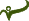
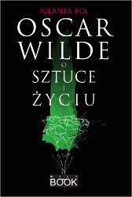
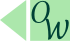

Oscar Wilde o sztuce i życiu |
|
|
Paradoks i prawda kroczą tą samą drogą. Żyjemy w epoce, w której ludzie traktują sztukę jak pewnego rodzaju autobiografię. Zatraciliśmy abstrakcyjny zmysł piękna. Współczesna moralność polega na przystosowaniu się do przeciętności. Uważam, że dla człowieka kultury takie przystosowanie jest w najwyższym stopniu niemoralne. Celem życia jest własny rozwój. Realizować swą naturę w sposób doskonały – to nasza życiowa powinność. Miłość jest cudowniejsza niż Sztuka. Portret Doriana Graya  Prawdą w sztuce jest to, czego przeciwieństwo jest także prawdą. Sztuka nie ma innego celu oprócz własnej doskonałości i respektuje wyłącznie własne prawa. Prawda masek W pełni uznaję, że nowoczesne powieści mają wiele zalet. Ale upieram się, że zupełnie nie nadają się do czytania. Z dala od rzeczywistości, ze spojrzeniem odwróconym od cieni w jaskini, Sztuka odsłania swoją doskonałość. Sztuka ma ukazywać złożone piękno, a nie proste prawdy. Jedyne portrety, które są przekonujące, to te, w których jest bardzo mało z modela i bardzo dużo z artysty. Żaden wielki artysta nigdy nie widzi rzeczy, jakimi są. Gdyby tak widział, nie byłby artystą. Wielki artysta stwarza wzorzec, a Życie próbuje go skopiować, powielić w wersji popularnej, niczym przedsiębiorczy wydawca. Upadek sztuki kłamstwa Wszystko, co dzieje się w rzeczywistości, jest nieprzydatne dla sztuki. Przez Sztukę i wyłącznie przez Sztukę możemy osiągnąć doskonałość; dzięki Sztuce i wyłącznie dzięki Sztuce możemy ochronić się przed ohydą codziennego życia. Najdoskonalsza krytyka jest bardziej twórcza niż twórczość, którą się zajmuje, a głównym celem krytyka jest widzieć dzieło takim, jakim w istocie nie jest. Wszelka sztuka jest niemoralna Żyjemy w czasach przepracowania i niedokształcenia, w czasach, kiedy ludzie są tak pracowici, że całkowicie głupieją. Rozwój rodzaju ludzkiego zależy od rozwoju jednostki, a tam, gdzie kultura osobista przestaje być ideałem, poziom intelektualny natychmiast się obniża – i to często nieodwracalnie. Ci, w których życiu dominuje uwielbienie piękna, dla świata pozostaną niepoprawnymi marzycielami. Krytyk jako artysta Sztuka jest na tym świecie najsilniejszym przejawem Indywidualizmu. Prawdziwy artysta bezwzględnie wierzy w siebie, gdyż jest bezwzględnie samym sobą. Wulgarność i głupota są dwiema najbardziej wyrazistymi cechami życia współczesnego. Dusza człowieka w epoce socjalizmu Życie samo w sobie jest sztuką i posiada swój styl podobnie jak sztuka próbująca je wyrazić. Pióro, pędzel i trucizna Ludzie w dzisiejszych czasach są tak powierzchowni, że nie rozumieją filozofii powierzchowności. Kobieta bez znaczenia Dwa słabe punkty naszych czasów to brak zasad i brak profilu. Bądźmy poważni na serio Tłumaczenie: Jolanta Pol Fragment książki Oscar Wilde o sztuce i życiu W książce dokonano wyboru i uporządkowano tematycznie wypowiedzi Wilde’a o sztuce i życiu. Dotyczą one m.in. funkcji sztuki, koncepcji sztuki doskonałej, artysty i odbiorcy, krytyki, relacji między sztuką a życiem, etyką a estetyką, jak również stosunku Wilde’a do życia, świata i człowieka. Podano je w języku angielskim i polskim tłumaczeniu. |
|
Więcej:  Wydawnictwo: WILDBOOKRok wydania: 2010 Oprawa: twarda Format: 205x145 Liczba stron: 224 Cena: 42 zł ISBN: 978-83-930701-0-7 Książka jest próbą przybliżenia refleksji Wilde’a o sztuce i życiu, ukazania ich aktualności, głębi, uniwersalnej wartości. W pierwszej części dokonano wyboru i uporządkowano tematycznie jego wypowiedzi o sztuce i życiu (podano je w języku angielskim i polskim tłumaczeniu). Część druga to omówienie problematyki zawartej w tych sądach. Appendix zawiera m.in. szczegółowe kalendarium, informacje dotyczące adaptacji utworów oraz wypowiedzi znanych postaci odnoszące się do Wilde’a bądź jego twórczości. Kontakt: mywildbook@gmail.com |
|

Wszelkie prawa zastrzeżone. Copyright © by Jolanta Pol |
|